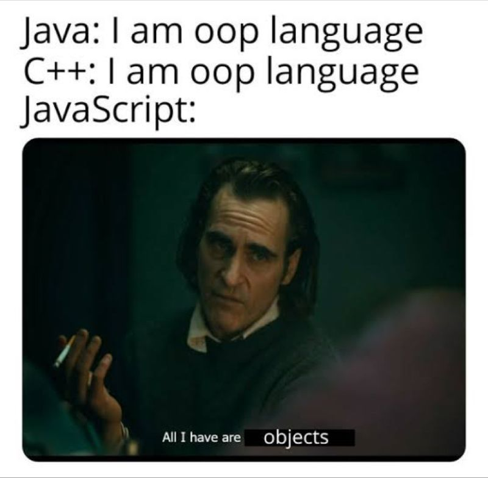

Most of my experience in coding is with C and C++, so I was excited to try a different coding language with Javascript. The language seemed to take the complex nature of C and streamline it for more convenience. One thing that caught my attention is JavaScript's ability to express complex algorithms in fewer lines compared to C. Despite my initial nervousness about the Workout of the Days (WODs) due to my lack of prior JavaScript experience, I found them surprisingly approachable. The simplicity of the language, especially when contrasted with C, made the transition smoother than anticipated.
Admittedly, I haven't finished the assigned JavaScript tutorials yet, due to my late registration for the class. Javascript's similarities to C have made the idea of finishing those tutorials seem less daunting. The potential for using less lines than used in C to achieve complex algorithms is an aspect that I am interested in. My initial impression of JavaScript is that it is clean and convenient compared to C.
Syntax Differences: The biggest difference that took getting used to is the syntax. For example, in C, a variable might be declared as follows: int myNumber = 42; In contrast, JavaScript allows for more flexible variable declarations, like: let myNumber = 42; Additionally, the contrast in how functions are defined and the handling of pointers brings plenty of ease for object-oriented programming.
Athletic software engineering has always been my preferred method of learning, but I never had a name for it. Calling it athletic definitely makes it sound cooler. The WODs serve as puzzles, effectively exercising my coding muscles. I am excited to test my coding knowledge and explore the possibilities within JavaScript. The nature of these challenges not only makes learning enjoyable but also reinforces problem-solving skills. This style of learning is a good blend of excitement and challenge, creating an effective learning environment for me.
